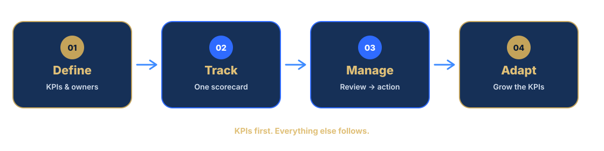
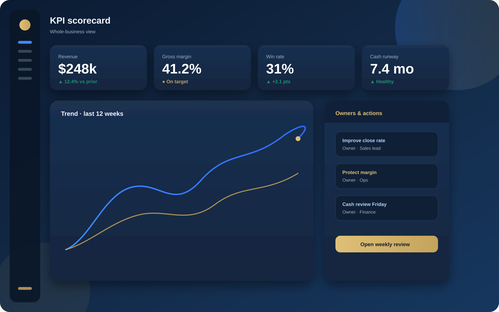
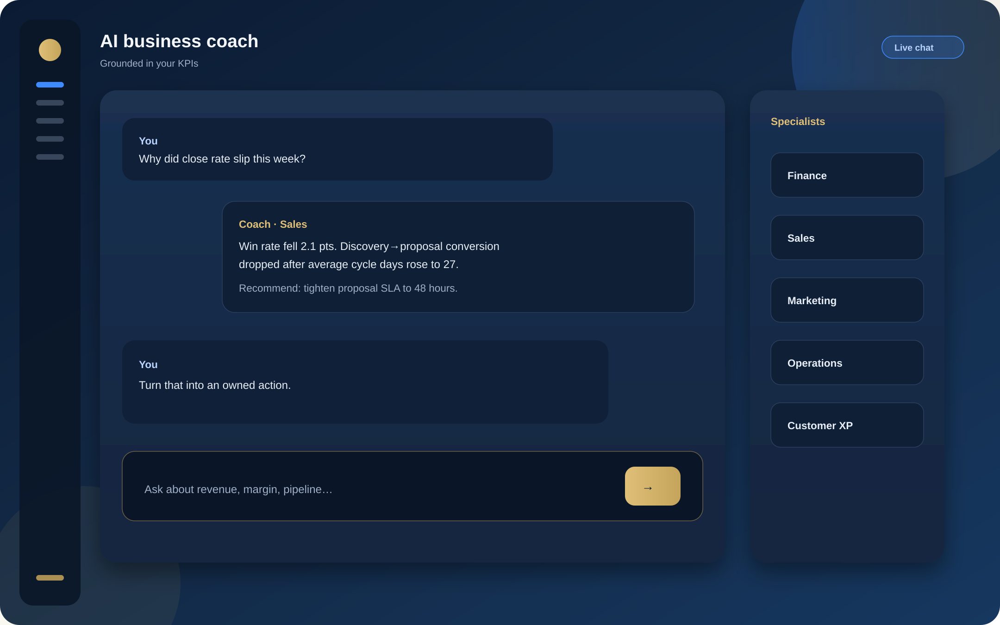
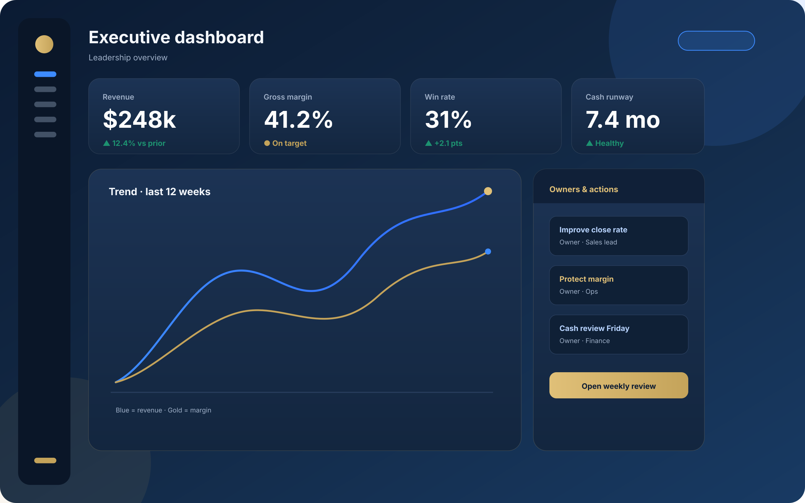
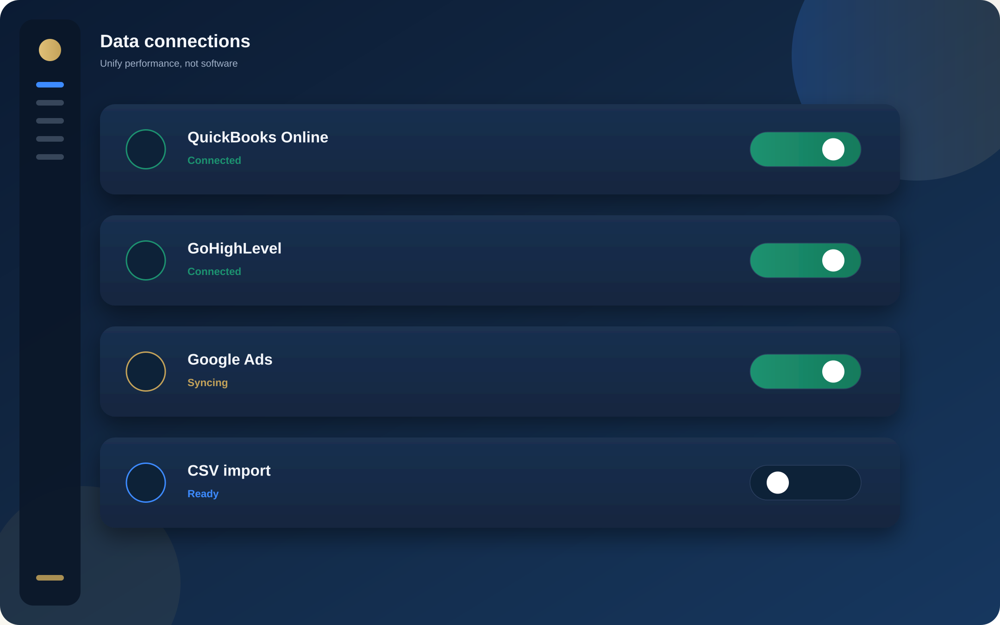

Product
One system. Four steps. A business that runs on what matters.
DataDashOS gives every business the operating rhythm great companies share: know your numbers, review them every week, act, and improve.

Step 1 · Define
Start with the right KPIs, not a blank dashboard.
Guided onboarding asks about your industry, business model, goals and stage. Industry blueprints then recommend the KPIs that matter most for a business like yours.
- Clear definitions, so everyone measures the same thing
- Targets for every KPI
- An owner for every number
- Your own custom KPIs alongside the recommended ones

Step 2 · Track
Every KPI, every department, one scorecard.
See the health of your whole business at a glance, from the executive view down to marketing, sales, operations and finance.
- Status, targets and trends on every KPI
- Prior-period and year-over-year comparisons
- Custom dashboard layouts and templates
- Data from connected tools, CSV import or manual entry
Step 3 · Manage
Turn numbers into decisions, every week.
Each week, DataDashOS reviews your KPIs and explains what changed and why. Your AI business coach recommends what to do next, and every recommendation becomes a tracked action with an owner.
- AI-written weekly reviews
- An AI business coach grounded in your own KPIs
- Specialist perspectives across sales, marketing, finance, operations and customer experience
- Action items tracked against the KPI they're meant to move

Step 4 · Adapt
Your KPIs grow as your business does.
What matters at 10 people isn't what matters at 100. DataDashOS spots room for improvement, flags KPIs that are slipping, and recommends new ones as your business changes.
- Improvement opportunities surfaced automatically
- Early warnings when KPIs drift off target
- New KPI recommendations as your business evolves
- Forecasts to see where you're heading

Works with your tools
Unify performance, not software.
DataDashOS sits on top of the tools you already use. It's built to connect with QuickBooks Online, GoHighLevel and Google Ads, with CSV import for everything else. More connections are on the way.

Ready to run your business KPI-first?
Join the waitlist and be among the first to get access.